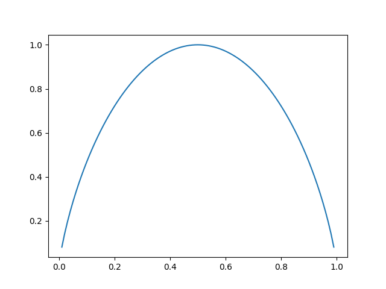

This articles introduces decision trees and describes the algorithms used to make predictions and for training. We’ll formally motivate the training algorithms using information theory and implement a set of utils for prediction and inference in Python.
1 Introduction and inference
A decision tree is a machine learning model used for both classification and regression tasks.
Decision trees are represented as trees where every leaf is the prediction and every internal node corresponds to a feature and sends the input to one subtree depending on its value. If a feature can take one of finitely many values that do not follow any natural order, each child of the node corresponds to one of the possible values. If a feature takes values in a interval (discrete or continuous), the node has two children corresponding to a partition of the interval into two sub-intervals.
When trying to predict the class of an input X given its features f_1(X), \mathellipsis, f_p(X), we start from the root (representing some feature f_i), go down the branch that corresponds to f_i(X) and repeat on the associated subtree until we reach a leaf. When performing a classification task, the leaves correspond to classes. In a regression task, the leaves are (\mu, \sigma^2) pairs corresponding to the parameter of the normal distribution that describes the value that can be taken by the output (some may argue that this sounds more like classification than regression…).
We’ll represent decision trees
2 Training a decision tree
2.1 What needs to be trained
Training a decision tree means finding the order in which the features of the input will be evaluated, and finding an optimal threshold when making a decision based on the value of a continuous feature.
Before delving into the theory, let’s start with a simple example that shows how the choice of the feature for every node affects the accuracy of the model. Consider a dataset consisting of twenty examples, each having class 0 or 1, and represented by three binary features, a, b and c, each taking value 0 or 1. This is an example of tree that matches the structure of the dataset:
2.2 A brief introduction to information theory
2.2.1 Information
When training a decision tree on a dataset D = \{d_1, \mathellipsis, d_N\}, we want to choose a feature f : D \to \mathcal C_f (where \mathcal C_f is a finite set) that holds as much information as possible on the class of the data points.
An information function is a continuous function I : (0, 1] \to [0, +\infty) that satisfies the following conditions:
- for all x, y, I(xy) = I(x) + I(y): if two events are independent, the information that their intersection provides is the sum of the information that each provides;
- I is strictly decreasing: if an event is less likely to happen than an another, knowing whether it happened brings more information.
We can prove that information functions are exactly the functions \log_b, where b \in (0, 1). Equivelently, they are the functions -\log_b where b > 1. Here is an outline of a proof, given some information function I:
- I is a bijection from (0, 1] onto [0, +\infty): injectivity comes from the fact that is is strictly monotonic and unboundedness comes from the fact that I(1/2^n) = nI(1/2).
- I has an inverse E : [0, +\infty) \to (0, 1] that satisfies E(x + y) = E(x)E(y) for all x, y.
- E is continous and agrees with the function r \mapsto E(1)^r on [0, \infty) \cap \mathbb{Q}, therefore it is the exponential function with base E(1) \in (0, 1).
- I is therefore the inverse of \exp_{E(1)}, so I = \log_{E(1)}.
We then extend I to [0, 1] by defining I(0) = \lim_{0} I = +\infty (which preserves the two axioms).
2.2.2 Entropy
Let \mathbb P be a probability measure with a finite sample space X and let p be its mass function. We define the entropy of \mathbb P, denoted H(\mathbb P), as the expected value of I \circ p with respect to \mathbb P: H(\mathbb P) = \sum_{x \in X} I(p(x)) p(x).
For convenience, we may use H(Y) to denote the entropy of the distribution of a random variable Y.
(H is a capital \eta, and should be pronounced eta and not eitsch…)
For simplicity, we pretend that there is a unique information function as the choice of the base does not matter for our purposes. In practice, it is convenient to chose base \frac{1}{|X|} (i.e. I = -\log_{|X|}) so that H takes values between 0 and 1 (more on that just below).
The entropy of a probability measure helps us quantify the amount of information carried by the knowledge of the outcome of a random experiment. A high entropy means that knowing the actual outcome gives a lot of information. In other words, it means that knowing the distribution wasn’t sufficient to predict what the outcome was going to be. For example, we can use Jensen’s inequality to show that the uniform distribution maximises the entropy over all distributions over any fixed finite sample space X. On the contrary, the entropy of a distribution that takes value 1 for one outcome and 0 for every other is 0.
An important example to remember is the one of a Bernoulli distibution, shown below. 
The graph shows the entropy of a Bernoulli distribution as a function of its parameter p \in [0, 1]. If p is close to 0 or 1 then the entropy is low, as almost all the information is carried by the theoretical distribution rather than the knowledge of the actual outcome. If p is close to 1/2, it is difficult to predict what the outcome will be by just looking at the distribution and most of the information is carried by the knowledge of the outcome of the experiment.
2.2.3 Conditional entropy and information gain
Let X be a random variable onto a finite domain (which we’ll assume without loss of generality to be \{1, \mathellipsis, n\} for some positive integer n) and let A \sube \N be an event. We define the conditional entropy of X given A as the entropy of the conditional distribution of the value of X given A, i.e.: H(X | A) = \sum_{k = 1}^n \mathbb P(X = k | A) I(\mathbb P(X = k | A)).
A high conditional entropy means that despite knowing that A occurred, we couldn’t predict what value X was going to take. A low conditional entropy means that the assumption that A occurred was enough to make the distribution of X “almost deterministic”.
We can then define the conditional entropy of X given another random variables Y taking values in another finite set, let’s say \{1, \mathellipsis, p\} as: H(X | Y) = \mathbb E_{y \sim \mathbb P_Y}[H(X | Y = y)] = \sum_{y = 1}^p \mathbb P(Y = y) H(X | Y = y).
If H(X | Y) is high, knowing whatever value was taken by Y won’t help us determine the value that X will take. If H(X | Y) is low, it is enough to know the value taken by Y to be able to predict what value X will take with reasonable confidence.
If A \in \R^{1, p} is the row matrix whose y-th entry is \mathbb P(Y = y) and B \in \R^{p, n} is the matrix whose (y, x)-th entry is \mathbb P(X = x | Y = y) then the formula for the conditional entropy of X given Y is: H(X | Y) = \sum_{x = 1}^n (A \times (M \odot I(M)))_x, where \odot denotes the Hadamard product, i.e. cell-wise multiplication. This expression can be used to easily calculate an entropy using a linear algebra library.
Finally, we use the information gain of X relative to Y \text{IG}(X, Y) = H(X) - H(X | Y) to quantify the information brought by the knowledge of the value taken by Y to predict the value that X will take.
2.3 Training for classification
The algorithm we’ll use to train decision trees is based on the following principle: at every node, we split the dataset according to a feature f such that the information gain of the class relative to f is maximised over all features.
Formally, consider a dataset D containing N points. Every point X has p features f_1(X), \mathellipsis, f_p(X) and a class C(X). The goal is to construct a tree such that: